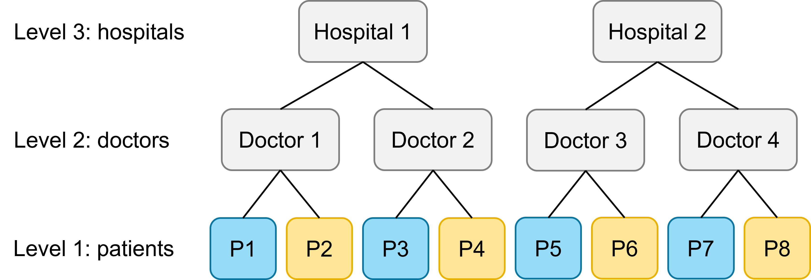

health <- read_csv("data/health.csv")8 Nested random effects
Mixed effects models are also sometimes referred to as “hierarchical” or “multi-level” models. So far in these materials, we’ve only fitted two-level models, containing a single clustering variable or effect. Sometimes, however, there are random effects nested inside others.
8.1 What is a nested random effect?
Once we are at the stage of having multiple variables in our sample that create clusters or groups, it becomes relevant to consider the relationship that those clustering variables have to one another, to ensure that we’re fitting a model that properly represents our experimental design.
We describe factor B as being nested inside factor A, if each group/category of B only occurs within one group/category of factor A.
For instance, data on academic performance may be structured as children grouped within classrooms, with classrooms grouped within schools. A histology experiment might measure individual cells grouped within slices, with slices grouped within larger samples. Air pollution data might be measured at observation stations grouped within a particular city, with multiple cities per country.
8.2 Fitting a three-level model
Another classic example of nested random effects that would prompt a three-level model can be found in a clinical setting: within each hospital, there are multiple doctors, each of whom treats multiple patients. (Here, we will assume that each doctor only works at a single hospital, and that each patient is only treated by a single doctor.)
Here’s an image of how that experimental design looks. Level 1 is the patients, level 2 is the doctors, and level 3 is the hospitals.
This is, of course, a simplified version - we would hope that there are more than two hospitals, four doctors and eight patients in the full sample!
We have a single fixed predictor of interest treatment (for which there are two possible treatments, A or B), and some continuous response variable outcome.
What model would we fit to these data? Well, it gets a touch more complex now that we have multiple levels in this dataset.
8.2.1 A three-level random intercepts model
Let’s put random slopes to one side, since they take a bit more thought, and think about how we would fit just some random intercepts for now.
It would be appropriate to fit two sets of random intercepts in this model, one for each set of clusters we have. In this case, that means a set of intercepts for the doctors, and a set of intercepts for the hospital.
lme_health_intercepts <- lmer(outcome ~ treatment + (1|doctor) + (1|hospital),
data = health)
summary(lme_health_intercepts)Linear mixed model fit by REML. t-tests use Satterthwaite's method [
lmerModLmerTest]
Formula: outcome ~ treatment + (1 | doctor) + (1 | hospital)
Data: health
REML criterion at convergence: 1848.5
Scaled residuals:
Min 1Q Median 3Q Max
-2.56989 -0.66086 0.06162 0.67602 2.84690
Random effects:
Groups Name Variance Std.Dev.
doctor (Intercept) 2.1416 1.4634
hospital (Intercept) 0.1688 0.4108
Residual 26.3425 5.1325
Number of obs: 300, groups: doctor, 30; hospital, 5
Fixed effects:
Estimate Std. Error df t value Pr(>|t|)
(Intercept) 26.6155 0.5299 8.4431 50.23 9.34e-12 ***
treatmentsurgery 6.2396 0.5926 269.0000 10.53 < 2e-16 ***
---
Signif. codes: 0 '***' 0.001 '**' 0.01 '*' 0.05 '.' 0.1 ' ' 1
Correlation of Fixed Effects:
(Intr)
trtmntsrgry -0.559This produces a model with two random effects, namely, two sets of random intercepts.
8.2.2 Where to include random slopes?
Deciding what level(s) we want to fit random slopes at, requires us to think about what level of our hierarchy we’ve applied our Treatment variable at. We’ll get to that in a moment.
Predictor varies at level 1
Let’s start by imagining the following scenario: the Treatment variable is varying at our lowest level. Each patient receives only one type of treatment (A or B), but both treatment types are represented “within” each doctor and within each hospital:

As a result, it would be inappropriate to ask lme4 to fit random slopes for the treatment variable at the patient level. Instead, the “full” model (i.e., a model containing all of the possible fixed and random effects) would be the following:
lme_health_slopes <- lmer(outcome ~ treatment + (1 + treatment|doctor) +
(1 + treatment|hospital), data = health)
summary(lme_health_slopes)Linear mixed model fit by REML. t-tests use Satterthwaite's method [
lmerModLmerTest]
Formula: outcome ~ treatment + (1 + treatment | doctor) + (1 + treatment |
hospital)
Data: health
REML criterion at convergence: 1834.1
Scaled residuals:
Min 1Q Median 3Q Max
-2.38341 -0.60702 -0.02763 0.71956 2.88951
Random effects:
Groups Name Variance Std.Dev. Corr
doctor (Intercept) 7.8846 2.8080
treatmentsurgery 7.3157 2.7047 -0.96
hospital (Intercept) 0.5085 0.7131
treatmentsurgery 3.5595 1.8867 -0.91
Residual 23.5775 4.8557
Number of obs: 300, groups: doctor, 30; hospital, 5
Fixed effects:
Estimate Std. Error df t value Pr(>|t|)
(Intercept) 26.6155 0.7223 4.0083 36.849 3.17e-06 ***
treatmentsurgery 6.2396 1.1270 3.9992 5.537 0.00521 **
---
Signif. codes: 0 '***' 0.001 '**' 0.01 '*' 0.05 '.' 0.1 ' ' 1
Correlation of Fixed Effects:
(Intr)
trtmntsrgry -0.794This produces a model with four sets of random effects: two sets of random intercepts, and two sets of random slopes.
Predictor varies at level 2
Let’s now imagine a (perhaps more realistic) scenario. Each doctor is in fact a specialist in a certain type of treatment, but cannot deliver both. For this, we will need to read in the second version of our dataset.
health2 <- read_csv("data/health2.csv")If you look closely at the dataset, you can see that treatment does not vary within doctor; instead, it only varies within hospital.
This means we cannot fit random slopes for treatment at the second level any more. We have to drop our random slopes for treatment by doctor, like this:
lme_health_slopes2 <- lmer(outcome ~ treatment + (1|doctor) +
(1 + treatment|hospital), data = health2)boundary (singular) fit: see help('isSingular')summary(lme_health_slopes2)Linear mixed model fit by REML. t-tests use Satterthwaite's method [
lmerModLmerTest]
Formula: outcome ~ treatment + (1 | doctor) + (1 + treatment | hospital)
Data: health2
REML criterion at convergence: 1845.7
Scaled residuals:
Min 1Q Median 3Q Max
-2.46342 -0.69900 -0.05043 0.69559 3.09601
Random effects:
Groups Name Variance Std.Dev. Corr
doctor (Intercept) 6.318 2.514
hospital (Intercept) 1.372 1.171
treatmentsurgery 3.635 1.907 -1.00
Residual 24.417 4.941
Number of obs: 300, groups: doctor, 30; hospital, 5
Fixed effects:
Estimate Std. Error df t value Pr(>|t|)
(Intercept) 25.7019 0.9265 4.3745 27.740 4.38e-06 ***
treatmentsurgery 4.5061 1.3766 4.0456 3.273 0.0302 *
---
Signif. codes: 0 '***' 0.001 '**' 0.01 '*' 0.05 '.' 0.1 ' ' 1
Correlation of Fixed Effects:
(Intr)
trtmntsrgry -0.808
optimizer (nloptwrap) convergence code: 0 (OK)
boundary (singular) fit: see help('isSingular')This gives us three sets of random effects, as opposed to four.
Predictor varies at level 3
Finally, let’s imagine a scenario where each hospital is only equipped to offer one type of treatment (hopefully, not a realistic scenario!). Here, all doctors and patients within each hospital use exactly the same method.
At this stage, we can no longer include random slopes for the treatment predictor anywhere in our model. Each hospital, doctor and patient only experiences one of the two treatments, not both, so we have no variation between the treatments to estimate at any of these levels.
So, here, we would go back to our random intercepts only model.
8.3 Implicit vs explicit nesting
The different health datasets that have been explored above all have an important thing in common: the variables have been implicitly nested. Each new hospital, doctor and patient is given a unique identifier, to make it clear that doctors do not reoccur between hospitals, and patients do not reoccur between doctors.
In other words, all the information about the nesting is captured implicitly in the way that the data are coded.
However, you might sometimes be working with a dataset that has not been coded this way. So how do you deal with those situations? You have a few options:
- Recode your dataset so it is implicitly nested
- Use explicit nesting in your
lme4model formula - Use the
A/Bsyntax in yourlme4model formula
8.3.1 The Pastes dataset
We’ll use another internal lme4 dataset, the Pastes dataset, to show you what these three options look like in practice.
data("Pastes")
head(Pastes) strength batch cask sample
1 62.8 A a A:a
2 62.6 A a A:a
3 60.1 A b A:b
4 62.3 A b A:b
5 62.7 A c A:c
6 63.1 A c A:cThis dataset is about measuring the strength of a chemical paste product, which is delivered in batches, each batch consisting of several casks. From ten random deliveries of the product, three casks were chosen at random (for a total of 30 casks). A sample was taken from each cask; from each sample, there were two assays, for a total of 60 assays.
There are four variables:
strength, paste strength, a continuous response variable; measured for each assaybatch, delivery batch from which the sample was chosen (10 groups, A to J)cask, cask within the deliver batch from which the sample was chosen (3 groups, a to c)sample, batch & cask combination (30 groups, A:a to J:c)
The experimental design, when drawn out, looks like this:
At first glance, this might look as if it’s a four-level model: assays within samples within casks within deliveries. However, that’s a bit of a overcomplication. There is only one sample collected per cask, meaning that we can really just think about assays being nested within casks directly.
The aim of this experiment was simply to assess the average strength of the chemical paste, adjusting for variation across batches and casks. Therefore, there are no fixed effects in the model - instead, we simply write 1 for the fixed portion of our model. We also won’t have any random slopes, only random intercepts.
If we follow the same procedure we did above for the health example, we might try something like this:
lme_paste <- lmer(strength ~ 1 + (1|batch) + (1|cask), data = Pastes)
summary(lme_paste)Linear mixed model fit by REML. t-tests use Satterthwaite's method [
lmerModLmerTest]
Formula: strength ~ 1 + (1 | batch) + (1 | cask)
Data: Pastes
REML criterion at convergence: 301.5
Scaled residuals:
Min 1Q Median 3Q Max
-1.49025 -0.90096 -0.01247 0.62911 1.82246
Random effects:
Groups Name Variance Std.Dev.
batch (Intercept) 3.3639 1.8341
cask (Intercept) 0.1487 0.3856
Residual 7.3060 2.7030
Number of obs: 60, groups: batch, 10; cask, 3
Fixed effects:
Estimate Std. Error df t value Pr(>|t|)
(Intercept) 60.0533 0.7125 6.7290 84.28 1.99e-11 ***
---
Signif. codes: 0 '***' 0.001 '**' 0.01 '*' 0.05 '.' 0.1 ' ' 1Something is wrong with this model. To spot it, we have to look carefully at the bottom of the random effects section, where it says Number of obs (short for observations).
lme4 has correctly identified that there are 10 delivery batches, and has fitted a set of 10 random intercepts for those batches - all good so far. However, R believes that we only have 3 casks, because the cask variable is implicitly nested, and so has only fitted a set of 3 random intercepts for that variable.
But this isn’t what we want. There is no link between cask A in batch A, and cask A in batch D - they have no reason to be more similar to each other than they are to other casks. We actually have 30 unique casks, and would like for each of them to have its own random intercept.
8.3.2 Recoding for implicit nesting
As shown above, the formula strength ~ 1 + (1|batch) + (1|cask) does not produce the model we want, because we don’t have implicit coding in the cask variable.
So, let’s create a new variable that gives unique values to each of the casks in our dataset. We’ll do this using the mutate function and the paste() function to create a unique ID for each cask.
Pastes <- Pastes %>% mutate(unique_cask = paste(batch, cask, sep = "_"))
head(Pastes) strength batch cask sample unique_cask
1 62.8 A a A:a A_a
2 62.6 A a A:a A_a
3 60.1 A b A:b A_b
4 62.3 A b A:b A_b
5 62.7 A c A:c A_c
6 63.1 A c A:c A_cThis generates 30 unique IDs, one for each of our unique casks. (We then have two observations of strength for each unique_cask.)
Now, we can go ahead and fit our desired model:
lme_paste_implicit <- lmer(strength ~ 1 + (1|batch) + (1|unique_cask),
data = Pastes)
summary(lme_paste_implicit)Linear mixed model fit by REML. t-tests use Satterthwaite's method [
lmerModLmerTest]
Formula: strength ~ 1 + (1 | batch) + (1 | unique_cask)
Data: Pastes
REML criterion at convergence: 247
Scaled residuals:
Min 1Q Median 3Q Max
-1.4798 -0.5156 0.0095 0.4720 1.3897
Random effects:
Groups Name Variance Std.Dev.
unique_cask (Intercept) 8.434 2.9041
batch (Intercept) 1.657 1.2874
Residual 0.678 0.8234
Number of obs: 60, groups: unique_cask, 30; batch, 10
Fixed effects:
Estimate Std. Error df t value Pr(>|t|)
(Intercept) 60.0533 0.6769 9.0000 88.72 1.49e-14 ***
---
Signif. codes: 0 '***' 0.001 '**' 0.01 '*' 0.05 '.' 0.1 ' ' 1No error message this time, and it has correctly identified that there are 30 unique casks, from 10 different batches. We’ve solved the problem!
Incidentally, and which you may have already noticed, the recoding that we did above also perfectly replicates the existing sample variable. This means we would get an identical result if we fitted the model strength ~ 1 + (1|batch) + (1|sample) instead.
8.3.3 Fitting a model with explicit nesting
If we’re in a situation like the above where we don’t have nice, neat implicitly coded variables, but we don’t really want to spend loads of time recoding a bunch of variables, we can instead fit our model using explicit nesting in lme4.
That essentially means combining the recoding and model fitting steps, so that you don’t have to save a new variable.
For the Pastes dataset, it would look like this:
lme_paste_explicit <- lmer(strength ~ 1 + (1|batch) + (1|batch:cask), data = Pastes)
summary(lme_paste_explicit)Linear mixed model fit by REML. t-tests use Satterthwaite's method [
lmerModLmerTest]
Formula: strength ~ 1 + (1 | batch) + (1 | batch:cask)
Data: Pastes
REML criterion at convergence: 247
Scaled residuals:
Min 1Q Median 3Q Max
-1.4798 -0.5156 0.0095 0.4720 1.3897
Random effects:
Groups Name Variance Std.Dev.
batch:cask (Intercept) 8.434 2.9041
batch (Intercept) 1.657 1.2874
Residual 0.678 0.8234
Number of obs: 60, groups: batch:cask, 30; batch, 10
Fixed effects:
Estimate Std. Error df t value Pr(>|t|)
(Intercept) 60.0533 0.6769 9.0000 88.72 1.49e-14 ***
---
Signif. codes: 0 '***' 0.001 '**' 0.01 '*' 0.05 '.' 0.1 ' ' 1Notice that the output for this model and for the one right above are the same - it’s because they are exactly equivalent to each other! We used batch:cask to create unique_cask earlier, so we’ve just directly inserted that code into our formula.
8.3.4 An alternative approach: the A/B syntax
There is another way to deal with nested random effects that haven’t been implicitly coded into the dataset. It’s not necessarily the way that we would recommend - recoding your variables and/or using explicit nesting has far less potential to trip you up and go wrong - but we’ll introduce it briefly here, since it’s something you’re likely to see if you start working with mixed models a lot.
We could fit the same model to the Pastes dataset, and achieve a set of 30 intercepts for cask and 10 for batch, without making use of the sample variable or using the A:B notation.
It works like this: when random effect B is nested inside random effect A, you can simply write A/B on the right hand side of the |.
lme_paste_shorthand <- lmer(strength ~ 1 + (1|batch/cask), data = Pastes)
summary(lme_paste_shorthand)Linear mixed model fit by REML. t-tests use Satterthwaite's method [
lmerModLmerTest]
Formula: strength ~ 1 + (1 | batch/cask)
Data: Pastes
REML criterion at convergence: 247
Scaled residuals:
Min 1Q Median 3Q Max
-1.4798 -0.5156 0.0095 0.4720 1.3897
Random effects:
Groups Name Variance Std.Dev.
cask:batch (Intercept) 8.434 2.9041
batch (Intercept) 1.657 1.2874
Residual 0.678 0.8234
Number of obs: 60, groups: cask:batch, 30; batch, 10
Fixed effects:
Estimate Std. Error df t value Pr(>|t|)
(Intercept) 60.0533 0.6769 9.0000 88.72 1.49e-14 ***
---
Signif. codes: 0 '***' 0.001 '**' 0.01 '*' 0.05 '.' 0.1 ' ' 1This gives you an identical model output to both of the other two models we’ve tried. That’s because (1|batch/cask) is actually shorthand for (1|batch) + (1|batch:cask), and in this dataset as we’ve seen above, batch:cask is the same as sample and unique_cask. In other words, we’ve fitted exactly the same model each time.
8.3.5 Which option is best?
Overall: implicit coding of your dataset is best, and it’s best to do this implicit coding during data collection itself. It prevents mistakes, because the experimental design is clear from the data structure. It’s also the easiest and most flexible in terms of coding in lme4.
In the absence of an implicitly coded dataset, we strongly recommend sticking with explicit coding rather than the shorthand syntax - yes, it requires more typing, but it’s somewhat safer.
And, no matter which method you choose, always check the model output to see that the number of groups per clustering variables matches what you expect to see.
8.4 Exercises
8.4.1 Cake
Exercise
Level:
For this exercise, we’ll use the most delicious of the internal lme4 datasets: cake.
This is a real dataset, taken from a thesis by Cook (1983), and is all about measuring cake quality of chocolate cakes baked using different recipes at particular temperatures.
Cook’s experiment worked as follows: for each recipe, she prepared 15 batches of cake mixture. Each batch was divided into 6 cakes, and each of those cakes were baked at one of the 6 temperatures.
data("cake")There are five variables in this dataset:
recipe, the exact recipe used for the cake (3 categories)replicate, the batter batch number for each recipe (15 replicates per recipe)temperature, a factor indicating which of 6 temperatures the cake was baked attemp, the numeric value of the baking temperatureangle, the angle at which the cake broke (used as a measure of cake “tenderness”)
For this exercise:
- Sketch a graphic/diagram that captures the experimental design
- Figure out what level of the dataset your variables of interest are varying at
- Consider how you might recode the dataset to reflect implicit nesting
- Fit and test at least one appropriate model
Worked answer
Consider the experimental design
The first thing to do is to draw out a diagram that captures the experimental design. That might look something like this:
We’ve got a 3-level dataset here: individual cakes within batches (replicates) within recipes. There are two fixed effects of interest - recipe and temperature, both categorical.
The next thing to think about is whether the coding within the dataset accurately reflects what’s going on.
There are 3 recipes, and 15 replicates of each recipe are mixed, for a total of 45 unique batches or mixtures. In the dataset as we’ve got it, the numbering has been repeated, so the nesting is not implicitly coded; but of course, replicate 1 for recipe A doesn’t have anything more in common with replicate 1 for recipe C.
Recode the dataset
So, let’s code up a new variable that captures unique replicates, and we’ll call it batch:
cake <- cake %>%
mutate(batch = recipe:replicate)As you should be able to see in your global environment, the new batch variable is a factor with 45 levels.
Each batch is then split into individual cakes, which undergo one of the 6 temperature treatments, for a total of 270 measurements.
Fit a model
Now, we can try fitting a model. We know that we want recipe and temperature as fixed effects, and probably also their interaction, at least to start with. We know we want to treat batch as a random effect (replicate nested within recipe), so we’ll include random intercepts.
We don’t, however, want to treat recipe as a random effect itself. It only has three levels, so it wouldn’t work well even if we wanted to. Plus, we’re specifically interested in those three levels and the differences between them.
lme_cake <- lmer(angle ~ recipe*temperature + (1|batch), data = cake)
summary(lme_cake)Linear mixed model fit by REML. t-tests use Satterthwaite's method [
lmerModLmerTest]
Formula: angle ~ recipe * temperature + (1 | batch)
Data: cake
REML criterion at convergence: 1638.6
Scaled residuals:
Min 1Q Median 3Q Max
-2.64661 -0.61082 -0.05207 0.56985 2.75374
Random effects:
Groups Name Variance Std.Dev.
batch (Intercept) 41.84 6.468
Residual 20.47 4.524
Number of obs: 270, groups: batch, 45
Fixed effects:
Estimate Std. Error df t value Pr(>|t|)
(Intercept) 33.12222 1.73683 42.00000 19.070 < 2e-16 ***
recipeB -1.47778 2.45625 42.00000 -0.602 0.55065
recipeC -1.52222 2.45625 42.00000 -0.620 0.53878
temperature.L 6.43033 1.16822 210.00000 5.504 1.07e-07 ***
temperature.Q -0.71285 1.16822 210.00000 -0.610 0.54239
temperature.C -2.32551 1.16822 210.00000 -1.991 0.04782 *
temperature^4 -3.35128 1.16822 210.00000 -2.869 0.00454 **
temperature^5 -0.15119 1.16822 210.00000 -0.129 0.89715
recipeB:temperature.L 0.45419 1.65211 210.00000 0.275 0.78365
recipeC:temperature.L 0.08765 1.65211 210.00000 0.053 0.95774
recipeB:temperature.Q -0.23277 1.65211 210.00000 -0.141 0.88809
recipeC:temperature.Q 1.21475 1.65211 210.00000 0.735 0.46299
recipeB:temperature.C 2.69322 1.65211 210.00000 1.630 0.10456
recipeC:temperature.C 2.63856 1.65211 210.00000 1.597 0.11175
recipeB:temperature^4 3.02372 1.65211 210.00000 1.830 0.06863 .
recipeC:temperature^4 3.13711 1.65211 210.00000 1.899 0.05895 .
recipeB:temperature^5 -0.66354 1.65211 210.00000 -0.402 0.68836
recipeC:temperature^5 -1.62525 1.65211 210.00000 -0.984 0.32637
---
Signif. codes: 0 '***' 0.001 '**' 0.01 '*' 0.05 '.' 0.1 ' ' 1
Correlation matrix not shown by default, as p = 18 > 12.
Use print(x, correlation=TRUE) or
vcov(x) if you need itAlternative models
If you want to do a bit of significance testing, you can try a few other versions of the model with different structures:
lme_cake2 <- lmer(angle ~ recipe + temperature + (1|batch), data = cake)
lme_cake3 <- lmer(angle ~ recipe + (1|batch), data = cake)
lme_cake4 <- lmer(angle ~ temperature + (1|batch), data = cake)
lm_cake <- lm(angle ~ recipe*temperature, data = cake)
anova(lme_cake, lm_cake) # random effects droppedrefitting model(s) with ML (instead of REML)Data: cake
Models:
lm_cake: angle ~ recipe * temperature
lme_cake: angle ~ recipe * temperature + (1 | batch)
npar AIC BIC logLik deviance Chisq Df Pr(>Chisq)
lm_cake 19 1901.3 1969.6 -931.63 1863.3
lme_cake 20 1719.0 1791.0 -839.53 1679.0 184.21 1 < 2.2e-16 ***
---
Signif. codes: 0 '***' 0.001 '**' 0.01 '*' 0.05 '.' 0.1 ' ' 1anova(lme_cake, lme_cake2) # recipe:temperature droppedrefitting model(s) with ML (instead of REML)Data: cake
Models:
lme_cake2: angle ~ recipe + temperature + (1 | batch)
lme_cake: angle ~ recipe * temperature + (1 | batch)
npar AIC BIC logLik deviance Chisq Df Pr(>Chisq)
lme_cake2 10 1709.6 1745.6 -844.79 1689.6
lme_cake 20 1719.0 1791.0 -839.53 1679.0 10.53 10 0.3953anova(lme_cake, lme_cake3) # temperature & recipe:temperature droppedrefitting model(s) with ML (instead of REML)Data: cake
Models:
lme_cake3: angle ~ recipe + (1 | batch)
lme_cake: angle ~ recipe * temperature + (1 | batch)
npar AIC BIC logLik deviance Chisq Df Pr(>Chisq)
lme_cake3 5 1785.7 1803.7 -887.84 1775.7
lme_cake 20 1719.0 1791.0 -839.53 1679.0 96.636 15 5.642e-14 ***
---
Signif. codes: 0 '***' 0.001 '**' 0.01 '*' 0.05 '.' 0.1 ' ' 1anova(lme_cake, lme_cake4) # recipe & recipe:temperature droppedrefitting model(s) with ML (instead of REML)Data: cake
Models:
lme_cake4: angle ~ temperature + (1 | batch)
lme_cake: angle ~ recipe * temperature + (1 | batch)
npar AIC BIC logLik deviance Chisq Df Pr(>Chisq)
lme_cake4 8 1706.1 1734.9 -845.06 1690.1
lme_cake 20 1719.0 1791.0 -839.53 1679.0 11.06 12 0.5238We see that when we drop the random intercepts for batch, and when we drop the temperature predictor, our chi-square values are significant. This indicates that these predictors are important. But we can drop recipe and recipe:temperature without a particularly big change in deviance.
(This is borne out somewhat if you’ve used the lmerTest package to perform degrees of freedom approximation and extract p-values as part of the lme_cake model summary.)
So, our final model is probably lme_cake4 = angle ~ temperature + (1|batch).
Check assumptions
For completeness, we’ll check the assumptions of lme_cake4 and visualise it for the sake of aiding our interpretation.
check_model(lme_cake4,
check = c("linearity", "homogeneity", "qq", "outliers"))check_model(lme_cake4,
check = c("reqq", "pp_check"))Most of the assumptions look okay, with the exception of the normal Q-Q plot for the random intercepts. The set of intercepts doesn’t really look like it’s nicely normally distributed here. Maybe a more complicated mixed effects model (something beyond the linear type we’re going with here) would help. Or, maybe this just means we should be a little less decisive in our overall conclusions.
Visualise the model
Last but not least, we can visualise the model:
ggplot(augment(lme_cake4), aes(x = temperature, y = angle)) +
geom_point(alpha = 0.7) +
geom_line(aes(y = .fitted, group = batch), alpha = 0.5)Overall, angle increases with temperature. (From what I understand of reading the thesis, this is a good thing from the perspective of the cake quality, as it suggests the cake is more tender. Scientific and delicious.)
We can see visually that the recipe and recipe:temperature terms don’t have much explanatory power by visualising the full model (commenting out the facet_wrap may also help you to see this):
ggplot(augment(lme_cake), aes(x = temperature, y = angle, colour = recipe)) +
facet_wrap(~ recipe) +
geom_point(alpha = 0.7) +
geom_line(aes(y = .fitted, group = batch))
Bonus questions
Level:
If you want to think a bit harder about this dataset, consider these additional questions. Feel free to chat about them with a neighbour or with a trainer.
- Why doesn’t it work if you try to fit random slopes for
temperatureonbatch? Have a look at the warning message that R gives you in this situation. - What happens if you use the numerical
tempvariable instead of the categoricaltemperature? Does it change your conclusions? Why might you prefer to use the numerical/continuous version? - Could
temperaturebe treated as a random effect, under certain interpretations of the original research question? Is it possible or sensible to do that with the current dataset?
For more information on the very best way to bake a chocolate cake (and a lovely demonstration at the end about the dangers of extrapolating from a linear model), this blog post is a nice source. It’s written by a data scientist who was so curious about the quirky cake dataset that he contacted Iowa State University, who helped him unearth Cook’s original thesis.
8.4.2 Parallel fibres
Exercise
Level:
For this exercise, we’ll be using a neurohistology dataset that focuses on a particular type of neuron found in the cerebellum, known as a parallel fibre. Parallel fibres are found in the uppermost layer of cerebellar cortex, and are known for being long; this experiment was designed to test whether the depth at which the fibre was found, had a bearing on its length.
parallel <- read_csv("data/parallel.csv")To measure the length of the fibres (which are <10mm long - big for a neuron!), slices were taken from the cerebella of six cats, at different depths. The depth of each slice was recorded. These slices were then stained, so that individual parallel fibres could be identified and measured.
The dataset contains five variables:
lengthof the fibre (in micrometres)depthof the slice (in micrometres)fibre, individual IDs for all of the fibressliceID number (maximum 10 slices per cat)catID number (1 through 6)
For this exercise:
- Sketch a graphic/diagram that captures the experimental design
- Determine whether the dataset requires recoding or explicit nesting
- Fit and test at least one appropriate model
Worked answer
Visualise the design
This is a nested design with three levels: fibre within slice within cat. But the fixed predictor depth varies at level 2, between slices (not between fibres).
Recoding
If we look at the structure of the dataset, we can see that the numbering for the slice variable starts again for each cat at 1, which is not what we want.
parallel %>% slice(1:8, 46)# A tibble: 9 × 5
fibre length depth slice cat
<dbl> <dbl> <dbl> <dbl> <dbl>
1 1 5780 260 1 1
2 2 5730 260 1 1
3 3 5790 260 1 1
4 4 5860 260 1 1
5 5 5690 260 1 1
6 6 5940 260 1 1
7 7 5950 260 1 1
8 8 5940 290 2 1
9 46 4670 300 1 2So, we need to recode a new variable, or be prepared to use explicit nesting in our model formula. Note that for this recoding to work, we also need to ask R to treat slice and cat as factors rather than numeric variables.
parallel <- parallel %>%
mutate(cat = as.factor(cat)) %>%
mutate(slice = as.factor(slice)) %>%
mutate(unique_slice = slice:cat)Fit a model
The full model that we could fit to these data contains three random effects: random intercepts for unique_slice (or slice:cat if you’re explicitly coding), random intercepts for cat, and random slopes for depth on cat.
(Since depth doesn’t vary within slice, i.e., each slice has only one depth, we can’t fit random slopes at level 2.)
lme_parallel <- lmer(length ~ depth + (1|slice:cat) + (1 + depth|cat),
data = parallel)Warning in checkConv(attr(opt, "derivs"), opt$par, ctrl = control$checkConv, :
Model failed to converge with max|grad| = 1.2981 (tol = 0.002, component 1)You may notice that you get an error - the model fails to converge. There are a couple of fixes we could try that involve tweaking the settings in the estimation procedure (e.g., increasing the maximum number of iterations allowed).
However, most errors like this just mean that we’re being too ambitious. So, the approach we’ll take here is to make the model simpler.
lme_parallel_int <- lmer(length ~ depth + (1|slice:cat) + (1|cat),
data = parallel)Check the assumptions
Next, we check the assumptions of our intercepts-only nested model:
check_model(lme_parallel_int,
check = c("linearity", "homogeneity", "qq", "outliers"))check_model(lme_parallel_int,
check = c("reqq", "pp_check"))Not bad at all. There are no obvious errors cropping up in these plots.
Visualise the model
Last but not least, we should have a look at our model predictions visually.
ggplot(augment(lme_parallel_int), aes(x = depth, y = length, colour = cat)) +
geom_point(alpha = 0.6) +
geom_line(aes(y = .fitted, group = cat))Despite the fact that depth is a continuous variable, this plot still has jagged, rather than straight, lines of best fit. This is because the plot is also taking into account the multiple sets of random intercepts for slice that are contained within each cat cluster.
We can, however, extract just the set of intercepts by cat, and with a bit more fuss, use this to add lines to the plot with geom_abline:
# use the coef function to extract the coefficients
cat_coefs <- coef(lme_parallel_int)$cat
# use geom_abline to add individual lines for each cat
ggplot(augment(lme_parallel_int), aes(x = depth, y = length, colour = cat)) +
geom_point(alpha = 0.6) +
geom_abline(intercept = cat_coefs[1,1], slope = cat_coefs[1,2]) +
geom_abline(intercept = cat_coefs[2,1], slope = cat_coefs[2,2]) +
geom_abline(intercept = cat_coefs[3,1], slope = cat_coefs[3,2]) +
geom_abline(intercept = cat_coefs[4,1], slope = cat_coefs[4,2]) +
geom_abline(intercept = cat_coefs[5,1], slope = cat_coefs[5,2]) +
geom_abline(intercept = cat_coefs[6,1], slope = cat_coefs[6,2])Is this a good model?
ggplot(parallel, aes(x = depth, y = length, colour = slice)) +
facet_wrap(~cat) +
geom_point(alpha = 0.6)If we plot the data faceted by cat, it suggests that the relationship between depth and length varies between cat. But we were forced to drop the random slopes for depth|cat due to lack of model convergence.
Our diagnostic plots look pretty good for our simpler, intercepts-only model, but the raw data indicate we might be missing something. Do you still trust the model? If no, what might a researcher do to improve this analysis?
Bonus question: notation
Level:
Think back to the brief introduction to linear mixed effects models notation given in section 5.5.1 of the course materials.
What would the equation of a three level model fitted to the parallel dataset look like?
Hint: you’ll need more subscript letters than you did for a two-level model!
Answer: three-level intercepts-only
E.g., length ~ depth + (1|slice:cat) + (1|cat)
Level 1:
\[ y_{ijk} = \beta_{0jk} + \beta_{1}x_{1ijk} + \epsilon_{ijk} \]
Level 2:
\[ \beta_{0jk} = \delta_{00k} + U_{0jk} \]
Level 3:
\[ \delta_{00k} = \gamma_{000} + V_{00k} \]
where,
\[ \left( \begin{array}{c} U_{0jk} \end{array} \right) ∼ N \left( \begin{array}{c} 0 \end{array} , \begin{array}{cc} \tau^2_{00} \end{array} \right) \]
and,
\[ \left( \begin{array}{c} V_{00k} \end{array} \right) ∼ N \left( \begin{array}{c} 0 \end{array} , \begin{array}{cc} \tau^2_{00} \end{array} \right) \]
Answer: three-level intercepts & slopes
E.g., length ~ depth + (1|slice:cat) + (1 + depth|cat)
Level 1:
\[ y_{ijk} = \beta_{0jk} + \beta_{1k}x_{1ijk} + \epsilon_{ijk} \]
Level 2:
\[ \beta_{0jk} = \beta_{00k} + U_{0jk} \]
Level 3:
\[ \beta_{00k} = \gamma_{000} + V_{00k} \] \[ \beta_{1k} = \gamma_{100} + V_{10k} \]
Where,
\[ \left( \begin{array}{c} U_{0jk} \end{array} \right) ∼ N \left( \begin{array}{c} 0 \end{array} , \begin{array}{cc} \tau^2_{00} \end{array} \right) \]
and,
\[ \left( \begin{array}{c} V_{00k} \\ V_{10k} \end{array} \right) ∼ N \left( \begin{array}{c} 0 \\ 0 \end{array} , \begin{array}{cc} \tau^2_{00} & \rho_{01} \\ \rho_{01} & \tau^2_{10} \end{array} \right) \]
8.5 Summary
Sometimes, a dataset contains multiple clustering variables. When one of those clustering variables is nested inside the other, we can model this effectively by estimating random effects at multiple levels.
Adding additional levels can create some complications, e.g., determining which level of the dataset your predictor variables are varying at. But it can also allow us to deal with real-life hierarchical data structures, which are common in research.
Key points
- Random effect B is nested inside random effect A, if each category of B occurs uniquely within only one category of A
- It’s important to figure out what level of the hierarchy or model a predictor variable is varying at, to determine where random slopes are appropriate
- Nested random effects can be implicitly or explicitly coded in a dataframe, which determines how the model should be specified in
lme4